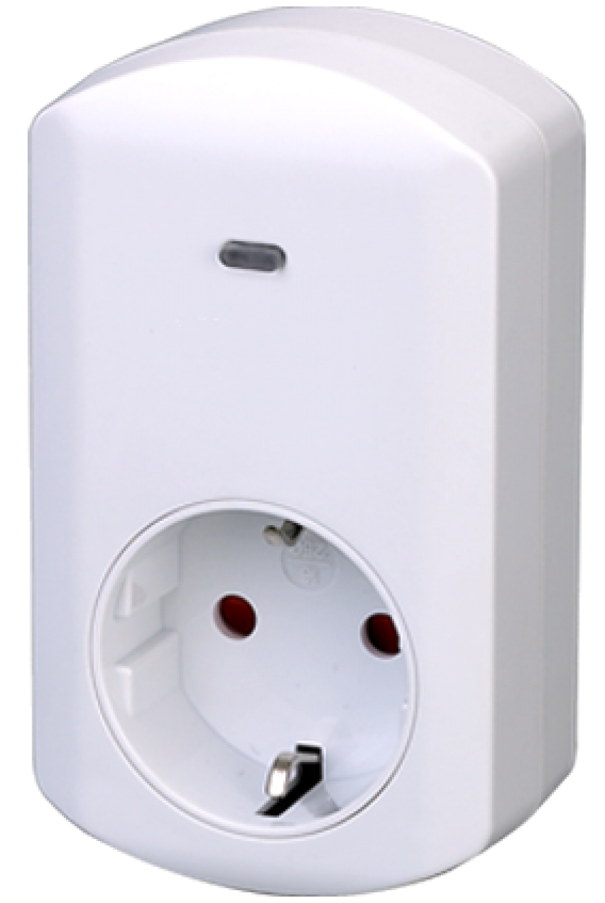
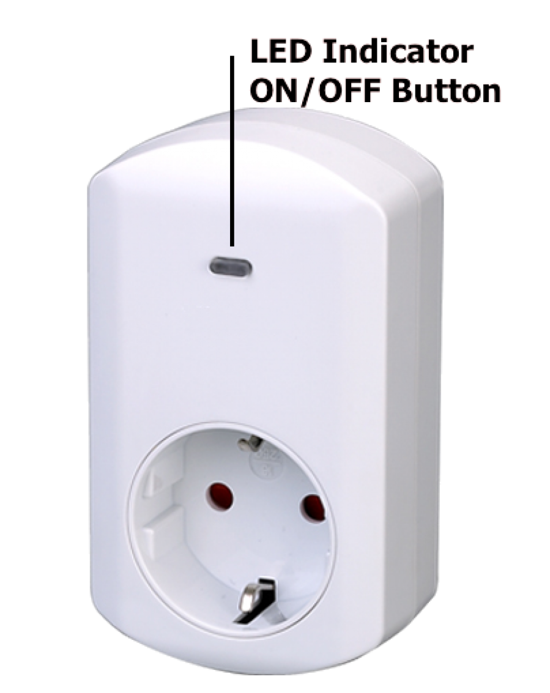
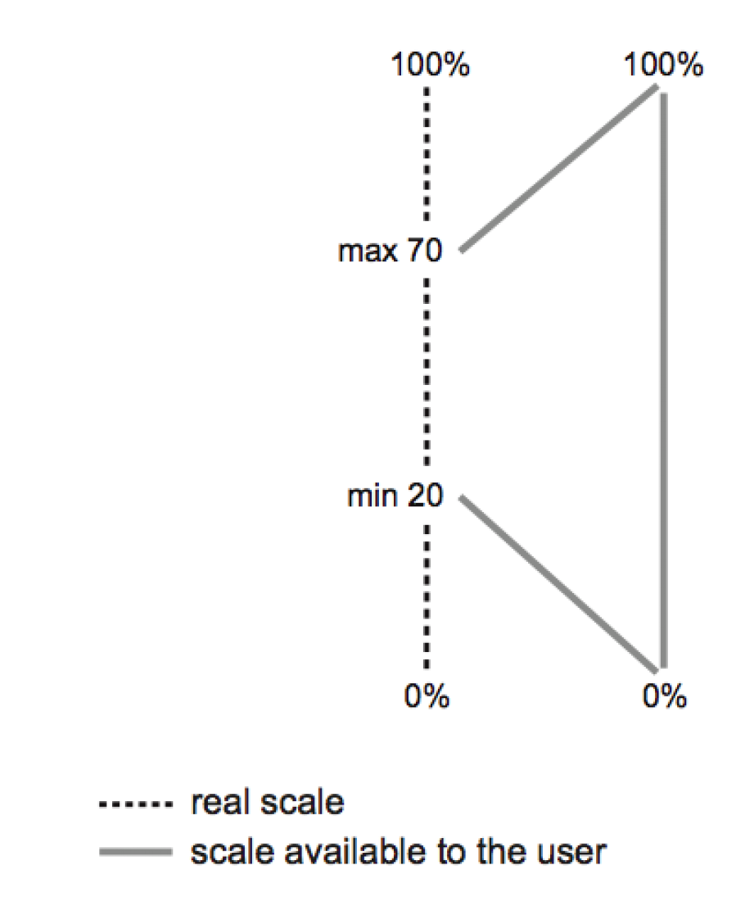

POP_123580
Firmware Version : 1.0 |
 |
Quick StartA This is a Z-Wave actuator. Inclusion and Exclusion are confirmed by a tripple click of the button. Please refer to the chapters below for detailed information about all aspects of the products usage. |
This is a wall plug dimmer that can be placed between a schuko wall outlet and electric devices, plugged in by cord. It can dim all incandescent lights, high voltage halogen lamps and transformers operated low voltage lamps without any restriction. Special optimization functions support the dimming of the majority of dimmable LED lights and Compact Fluorescent Lights (CFLs). The device is IP20 rated and can therefore only be used in dry environments. The device offers a Baby-Dim Function which dims down a lamp from a defined level into another defined level in a longer but also definable period (e.g. 20 minutes). An automatic Light-Off function and programmable dimming and switching behavior makes the device a very flexible tool for inhouse lighting.
The plug can be plugged into every wall outlet for Plug-Type Schuko (Plug Type F). It is IP20 rated and can therefore only be used in dry environments. Do not locate the device facing direct sunlight, humid or dusty place. The suitable ambient temperature for the device is 0°C ~ 40°C. Plugs must not be stacked and operated.
I On factory default the device does not belong to any Z-Wave network. The device needs to join an existing wireless network to communicate with the devices of this network. This process is called Inclusion. Devices can also leave a network. This process is called Exclusion. Both processes are initiated by the primary controller of the Z-Wave network. This controller will be turned into exclusion respective inclusion mode. Please refer to your primary controllers manual on how to turn your controller into inclusion or exclusion mode. Only if the primary controller is in inclusion or exclusion mode, this device can join or leave the network. Leaving the network - i.e. being excluded - sets the device back to factory default.
If the device already belongs to a network, follow the exclusion process before including it in your network. Otherwise inclusion of this device will fail. If the controller being included was a primary controller, it has to be reset first.
Inclusion and Exclusion are confirmed by a tripple click of the button.

The device is able to dim electric loads up to 300 W. The device can be dimmed wirelessly or using the local button.
Local Operation
The local button has the following functions:
LED Usage
The device has one blue LED used to indicate status information. The behavior
of the blue LED can be configured:
Automated Dimming Function
If activated the dimmer will turn off automatically after a defined time. This function is particularly useful if the dimmer is
turned on using a motion detector of any other type of sensor. In this case it's possible to further define the reaction of the dimmer
on certain signals sent from a sensor. This allowes a very flexible application of the dimmer in the house.
Baby Sleeping Function
The device can be used to help babies and little children to find sleep. (It's save to use the device in childrens rooms or closed to
their beds due to the special shutter function that shield the high voltage from touching). When enabled a double click of the button
will turn the light into a definable level and then it will gradually dim down over time. The time of dimming and the target dimming state
- e.g. off - can be configured as well.
Dimming LEDs and CFLs
LEDs and Compact Flouroscent lights are complicated to dim for two reasons:

Advanced Options for LED and CFL tweakings
The configuration parameters No 51 - 54 allow to configure the dimming behavior on a very technical level. Do not touch these values
unless you know what you do!
A dimmer is controlled by the Zero Crossing signal and the TRIAC Fire pulse. The TRIAC fires every half sine wave max one time.
A fire cycles starts with the Zero Crosssing and then lasts 156 pulse length increments. The value #51 defines the minimum time
after zero crossing because the Triac can fire regardless of the dimming level. Parameter #54 defines whether the fire pulse
has defines length (short) or is extended as long as allowed by the minimum start value in parameter #54 and the minimum trailing
value defines by #53. This value defines the minimum time the pulse will not be active because of the next zero crossing signal.
The device can be turn into a child protection mode. In this mode all local operation is disabled.
The child protection mode MUST be turned on wirelessly. However in protected by sequence mode it is possible to unlock the device for local operation with a triple click. The unlock state will last for 5 seconds.
A Z-Wave devices control other Z-Wave devices. The relationship between one device controlling another device is called association. In order to control a different device, the controlling device needs to maintain a list of devices that will receive controlling commands. These lists are called association groups and they are always related to certain events (e.g. button pressed, sensor triggers, ...). In case the event happens all devices stored in the respective association group will receive a common wireless command.
Association Groups:
| 1 | Send Reports on blind state change (max. nodes in group: 5) |
Z-Wave products are supposed to work out of the box after inclusion, however certain configuration can adapt the function better to user needs or unlock further enhanced features.
IMPORTANT: Controllers may only allow to configure signed values. In order to set values in the range 128 … 255 the value sent in the application shall be the desired value minus 256. For example: to set a parameter to 200 it may be needed to set a value of 200 minus 256 = minus 56. In case of two byte value the same logic applies: Values greater than 32768 may needed to be given as negative values too.
| Value | Description |
|---|---|
| 0 | Disabled |
| 1 | Show switch state |
| 2 | Night mode (inverted switch state) |
| 3 | Operated by Indicator Command Class (Default) |
| Value | Description |
|---|---|
| 0 | Disabled (Default) |
| 1 — 65535 | sec |
| Value | Description |
|---|---|
| 0 | Switch off (Default) |
| 1 | Ignore |
| 2 | Switch on |
| 3 | Switch on if load is off else switch off |
| Value | Description |
|---|---|
| 0 | No |
| 1 | Yes (Default) |
| Value | Description |
|---|---|
| 0 | Instantly |
| 1 — 255 | in 10ms units (Default 30) |
| Value | Description |
|---|---|
| 1 — 255 | seconds (Default 3) |
| Value | Description |
|---|---|
| 0 | last dim level (Default) |
| 1 | maximum dim level when already turned on |
| 2 | Always maximum dim level |
| Value | Description |
|---|---|
| 0 | Disabled (Default) |
| 1 — 99 | in minutes |
| Value | Description |
|---|---|
| 0 — 255 | % (Default 0) |
| Value | Description |
|---|---|
| 1 — 100 | in 10ms units (Default 50) |
| Value | Description |
|---|---|
| 1 — 95 | Level limit (Default 1) |
| Value | Description |
|---|---|
| 0 | Work as switch: use off and maximal level |
| 10 — 99 | Level limit (Default 99) |
| Value | Description |
|---|---|
| 0 | Use previous light level (Default) |
| 1 — 99 | Define light level in % |
| Value | Description |
|---|---|
| 5 — 60 | (Default 28) |
| Value | Description |
|---|---|
| 5 — 60 | (Default 28) |
| Value | Description |
|---|---|
| 3 — 20 | (Default 10) |
| Value | Description |
|---|---|
| 0 | Long pulse (Default) |
| 1 | Short pulse |
| Power Supply | 230V ~50-60 Hz |
| Attachable Loads | resistive and inductive up to 300 W, reactive up to 100 W |
| Fuse | Type: T 1.25 A H (Load 1.25 Ampere, high shutdown capacity), D: 5 mm, L: 20 mm |
| IP Rating | 20 |
| Frequency | 868.42 MHz (SRD Band) |
| Wireless Range | up to 100 m outside, on average up to 20 m inside buildings |
| Explorer Frame Support | Yes |
| SDK | 4.54 pl1 |
| Device Type | Slave with routing capabilities |
| Generic Device Class | Multilevel Switch |
| Specific Device Class | Multilevel Power Switch |
| Routing | Yes |
| FLiRS | No |
| Firmware Version | 1.0 |